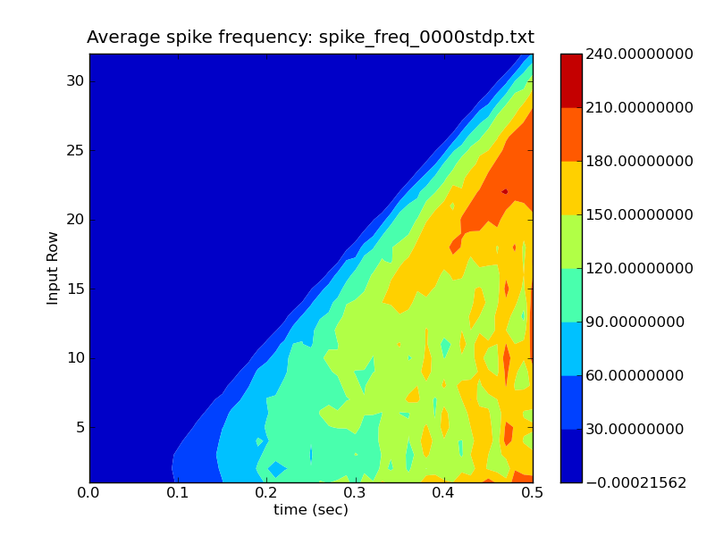
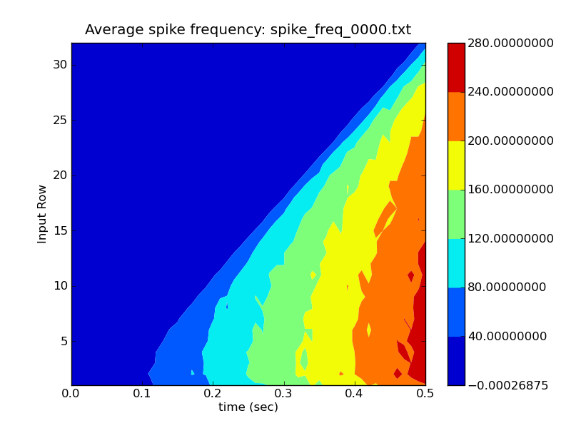

RSnet is a demonstration of a simple network, consisting of a square grid of simplified neocortical regular spiking pyramidal cells, each one coupled with excitory synaptic connections to its four nearest neighbors. A brief current injection pulse to the soma of a specified cell (typically in the center or lower left corner) starts a propagating wave of excitation.
The original GENESIS 2 script 'RSnet.g' was used as an example in the GENESIS Modeling Tutorial section "Creating large networks with GENESIS" (http://www.genesis-sim.org/GENESIS/UGTD/Tutorials/genprog/net-tut.html).
This short tutorial describes the use of 'planarconnect' and related commands to build a network from prototype cells, by analyzing the 'RSnet.g' script. It should be consulted for background on the RSnet2 scripts.
The simulation script was designed to be easily modified to allow one to use other cell models, implement other patterns of connectivity, or to augment with a population of inhibitory interneurons and the several other types of connections in a cortical network. It has since been further extended to more biologically interesting networks with both excitatory and inhibitory connections, such as the Vogels and Abbott (2005) model GENESIS implementation with Hodgkin-Huxley dynamics. This was used as a benchmark for neural simulators in the review by Brette et al. (2007). This model may be found at http://www.genesis-sim.org/GENESIS/UGTD/Tutorials/networks/Vogels-Abbott_net/index.html
Although the RSnet model is too simple to be of serious scientific interest without the extensions described above, it illustrates the same GENESIS objects and commands that are used in much more detailed cortical models. With no competing inhibition, the general behavior of the model can easily be understood, and the correct behavior recognized from an analysis of the output.
The RSnet2 scripts are reorganized and more modular versions of RSnet.g. Unless otherwise noted, they are identical to each other, except for the values of some flags that are used to determine which features to enable. This allows, for example, 'RSnet2-G3.g' to run in batch mode with no graphics, using only the most basic G2 functions needed to run the network model and output the results with an 'asc_file' object. The other change that was made from the original version was to replace the use of 'planarconnect' with the more general three-dimensional command 'volumeconnect', and 'planarweight' and 'planardelay' by 'volumeweight' and 'volumedelay'.
The main scripts are:
RSnet2-G2.g - This has the definitions:
str RUNID = "0000" // default ID string for output file names
int graphics = 1 // display control panel, graphs, optionally net view
int batch = 0 // if (batch)run with default parameters
int netview_output = 1 // Record network output (soma Vm) to a file
int binary_file = 1 // if 0, use asc_file to produce ascii output
// else use disk_out to produce binary FMT1 file
int EPSC_output = 0 // output summed EPS currents to file (not implemented)
int connect_network = 1 // Set to 0 for debugging with unconnected cells
int netview = 1 // show network activity view (slower, but pretty)
int hflag = 0 // use hsolve if hflag = 1
int hsolve_chanmode = 0 // Only applies if hflag = 1
int G3_hacks = 0 // Special treatment for things that G3 can't yet do
// Also needed for G2 with hsolve
// At present, this is the only stimulus option
str input_model = "pulsed_inject" // pulsed current injection to soma
RSnet2-G2.g uses the included file RSnet2-graphics.g to provide a GUI for control of the simulation and visualization of the spreading network activation, using the XODUS 'xview' object. XODUS dialog boxes (labeled textfields) on the control panel invoke script functions for setting many of the cell, network, and injection parameters. A different "run ID" string may be specified in order to save results from different runs. All versions of the this script create a summary file with a name of the form 'run_summary_<RUNID>.txt'. RSnet2-G2.g records the soma Vm of each cell in a binary file created by the 'disk_out' object. The output file has a name of the form 'Ex_net_Vm_<RUNID>.dat', and can be used for post-run analysis by the script 'replay_RSnet2.g' described below.
The results of running this simulation with default parameters are included in the directory with the scripts as 'run_summary_0000-def.txt' and 'Ex_net_Vm_0000-def.dat'.
RSnet2-h4.g - These definitions are different from RSnet2-G2.g:
str RUNID = "0000h4" // default ID string for output file names
int netview = 0 // show network activity view (slower, but pretty)
int hflag = 1 // use hsolve if hflag = 1
int hsolve_chanmode = 4 // Only applies if hflag = 1
int G3_hacks = 1 // Special treatment for things that G3 can't yet do
// Also needed for G2 and hsolve
This illustrates the creation of a network with cells that have been taken over by the hsolver in chanmode 4. Because the xview display cannot operate with the higher chanmodes, the netview display is disabled. 'G3_hacks' is used because INJECT messages from a pulsegen to a compartment do not work in GENESIS 2 in the higher chanmodes. This is not required in chanmode 1, which also allows the netview. The default simulation produces a file 'Ex_net_Vm_0000h4.dat', that when analyzed with 'replay_RSnet2.g', produces results that are qualitatively similar, but not exactly the same as RSnet2-G2.g. For example, compare the two contour plots freqplot-0000-def.png and freqplot-0000h4.png
RSnet2-G3.g - These definitions are different from RSnet2-G2.g:
int graphics = 0 // display control panel, graphs, optionally net view
int batch = 1 // if (batch)run with default parameters
int binary_file = 0 // if 0, use asc_file to produce ascii output
// else use disk_out to produce binary FMT1 file
int netview = 0 // show network activity view (slower, but pretty)
int G3_hacks = 1 // Special treatment for things that G3 can't yet do
// Also needed for G2 and hsolve
Here, the default simulation (RUNID = "0000") is run for the default time tmax = 0.5 sec. There are no graphics, and the output file is a plain text file created by 'asc_file' with a column for each cell and a line for each output time step.
The use of 'G3_hacks' replaces the pulsegen with a short sequence of steps with constant injection, followed by the the remainder of the run with no injection. It also replaces the uses of single commands having wildcard paths by loops over all cells, because ns-sli cannot currently use this wildcard notation. For example, the 'volumeweight' and 'volumedelay' commands are replaced by with loops over all cells and all synapses, in order to set the synapse weight and delay.
It is difficult to compare the results with those of RSnet2-G2.g because the 'disk_in' object used in 'replay_RSnet2.g' cannot properly read ascii files with more than 16 columns. This is discussed further below.
RSnet2-STDP.g - This has an additional flag:
use_stdp = 1 // Use spike timing dependent plasticity in Ex_ex connections
and script commands to implement spike timing dependent changes in synaptic weights. Its use and requirements are explained in more detail below.
The GENESIS 2 script 'replay_RSnet2.g' is unlikely to be translated into GENESIS 3. It requires XODUS graphics to run, and uses a variety of GENESIS 2 device class objects and options of the 'table' object with four different clocks in order to collect statistics for analysis and comparison of network behavior. It is offered here for these reasons:
1. At present, it is the only way to analyze the network output and generate the files needed by the G3Plot package. 2. It may be used as a prototype for python-based G3 graphical and analysis tools, and can eventually be replaced by python code. 3. It presents a challenge for G3 implementation, and the question of whether this sort of analysis tool should be scriptable in G3, or scripted separately in python. The answer is not obvious.
It should be noted that the type of analysis to be performed depends strongly on the type of network that is being modeled. This makes it very difficult, if not impossible, to design a general-purpose spike analysis tool. Some degree of scripting will be required to generate comparable tools to 'replay_RSnet2.g', whether it be with G3 objects in a GENESIS script, or with provided python libraries of objects that can be "glued" together with simple python scripts by the user.
After starting the simulation with GENESIS 2, enter the RUNID in the top dialog if it is other than the default "0000" and click "RUN". As it runs and generates the voltage plots and netview display, it will generate the file "spike_freq_<RUNID>.txt". This contains a line for each increment of time (determined by the frequency histogram bin width) and a column for each row in the network that gives the average firing rate of cells in that row during that time interval. After exiting GENESIS, the command:
rowrateplot.py spike_freq_0000.txt
will generate a contour plot showing how the average frequency of cells on each row changes with time. The resulting plot is shown in freqplot-0000-def.png. It shows the progressive increase in firing rate of each row as the wave of excitation spreads.
Optionally, clicking "Write spike times to file" after the end of the run will generate a file "spike_times_<RUNID>.txt", with the data that can be used to generate a raster plot for the (approximately) middle cell on each row, with the row number on the y-axis. This may be used with:
rasterplot.py spike_times_0000.txt
to produce the plot seen in rasterplot-0000-def.png
Here, the x-axis shows the time of spike events for the (approximately) middle cell on each row, with the row number on the y-axis. This also provides evidence of the expanding wave of excitation.
Clicking on "Display Bins" in the firing rate distribution form will show a histogram of the firing rates of all the cells.
The "freq_form" displays the average firing rate of cells in the network vs. time. It grows with time, as the propagating wave hits more cells. The "Row number" dialog below the allows one to specify averages over cells in a single row 1-32. The default "0" means all rows, and should be used when creating the output files. The "Bin width" dialog is useful for adjusting the optimum size bins for the firing frequency vs. time calculations. After changing one of these parameters, it is necessary to do a RESET and RUN to generate the new data.
The connections in RSnet2 have a radial symmetry, connecting to nearest neighbors, and the activation from the injected cell spreads out radially. The script functions defined in 'replay_RSnet2.g' and the included file 'analysis_funcs-RSnet2.g' are based on those used to analyze a model under development (ACnet2) of the thalamic input layer of primary auditory cortex. In this case, input from the thalamus is to a row of cells in the network, and it was of interest to generate tables of the average firing frequency of cells lying along each row at specified time intervals. This is the analyis performed by 'replay_RSnet2.g', and it makes some sense when the the stimulated cell is a bottom row cell, because it shows the vertical propagation of the activation. This is the data saved to 'spike_freq_0000-def.txt' and is the format expected by the G3Plot tool 'rowrateplot.py' to create the contour plot.
However, it would be better to for 'replay_RSnet2.g' to group the cells by rings around the point of injection, rather than by rows, and have a more general version of 'rowrateplot.py'. The latter should not be difficult, but the GENESIS 2 (and XODUS) script programming required to make this change in the calculation of the data to go in the spike frequency file is large, and not worth the effort. Other networks and groupings of cells would require other modifications of old SLI syntax script functions.
This is the challenge for G3:
Make simple user-scriptable or GUI-configurable tools to allow one to perform this sort of post-run analysis. This type of analysis is not the kind of thing that is easily done by a novice with Matlab - Matlab is more suited to the display aspect, which can be handled by Matplotlib and other Python tools.
The script 'RSnet2-G3.g' creates a plain text file for the netview output of cell membrane potentials. The script 'replay_RSnet2-asc.g' shows how such a file can be read with 'disk_in' with plain text file format. It runs without errors, but produces incorrect results. This is because the GENESIS 2 implementation of 'disk_in' restricts the input file to having no more than 16 columns per line. As there is a column for every cell, and 'disk_in' reads a new line every time step, only the first 16 cells of the 1024 cell network are read. This problem should be addressed in the G3 implementation of 'disk_in'.
RScell.p - cell parameter file describing 'RScell' used in the network
protodefs.g - definitions and commands to create prototype elements
DPchans.g - functions to create the channels used in RScell
Sample output files - from running and replaying the default 'RUNID 0000' simulation:
run_summary_0000-def.txt - summary file with most important parameters Ex_net_Vm_0000-def.dat - binary (FMT1) file with network soma Vm spike_freq_0000-def.txt - binned frequency(time, row) for rowrateplot.py spike_times_0000-def.txt - spike times of middle cell on each row
figures/ - directory with the images saved from rowrateplot.py and rasterplot.py
The script RSnet2-STDP.g is an illustration of an implementation of spike timing dependent changes in the excitatory connection weights, using the 'stdpSynchan' object instead of the 'synchan'. This requires a recompilation of GENESIS using a patch to GENESIS 2.3. The stdpSynchan was developed by Jeremy Edgerton, and is available for download with example scripts and documentation at http://genesis-sim.org/libraries.
'RSnet2-STDP.g' requires the additional files:
At intervals during the simulation run, the script prints out the changing weight values between cells on the left edge of the network and those immediately above them.
A run with the default parameters produces output files for RUNID "0000stdp". When these are analyzed with 'replay_RSnet2.g' and the resulting files are plotted with 'rasterplot.py' and 'rowrateplot.py', the rasterplot, shown in rasterplot-0000stdp.png shows increasing frequency of firing and then many skipped firings on the lower rows, in comparison with rasterplot-0000-def.png which shows very regular firing, with no missed spikes, once the wave hits a cell.
Likewise, the rowrateplot contour plot 'freqplot-0000stdp.png'
shows very irregular patches with high rates of firing, compared to freqplot-0000-def.png.
This burst firing behavior can also be seen in the netview display during the replay.
All figures referenced above are in the 'figures/' subdirectory.
Note on the ReStructured Text markup used in README.txt
The lines beginning with '..' are targets for hyperlinks to the image files for the figures. These will not appear in the HTML file, but:
rasterplot-0000-def.png_
will show up as a hyperlink to the figure, with no trailing underscore in the name. The indentation used for blocks of preformatted (literal monospaced) text that follow a double colon is necessary for identifying the extent of the block.
The figures in the previous section that are included directly use a target specification where they occur, e.g.:
Likewise, the rowrateplot contour plot 'freqplot-0000stdp.png' .. image:: figures/freqplot-0000stdp.png
Dave Beeman
Thu Oct 14 17:21:12 MDT 2010
{kind=link}
{kind=link}
{kind=link}
{kind=link}